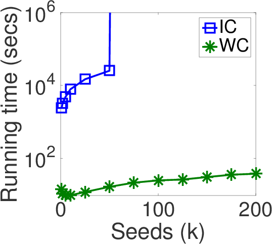

Related Publications (*Equal Contribution)
Akhil Arora*, Sainyam Galhotra* and Sayan Ranu
Proc. of the 2017 ACM SIGMOD International Conference on Management of Data.
Source Code [Work in Progress]: Please see the im_benchmarking repository on github.
Note: Due to an undocumented assumption in the SIMPATH code released by the authors of SIMPATH paper, the running times reported for SIMPATH on the DBLP and YouTube datasets in our paper is not a true reflection of the SIMPATH algorithm. We will release a technical report soon with the correct running times.
Note: It has come to our notice that groups in University of British Columbia (headed by Lakshmanan et al.) and Nanyang Technical University (Xiao et al.), have published refutations on our benchmarking study as a technical report. A point by point response to the refutations would be placed on our websites soon!
Additionally, we have the following comments to make on their refutations:
- The authors of this technical report had earlier sent an email to the SIGMOD PC chair stating that our paper possess serious flaws. The refutations detailed in the technical report available at arXiv (version 3), are largely based on the set of flaws that they had pointed out in their email. We would like to bring this to the kind notice of the reader of this note and the technical report on refutations that our paper was discussed again by the SIGMOD PC Committee including the original reviewers of our paper, and was still marked to be fit and worthy for a place in the proceedings of SIGMOD 2017. This gives a reasonable level of assurance that our paper is of SIGMOD quality. [Email by Laks et al.] [Our Response] [Response by SIGMOD'17 PC Chair]
- Furthermore, we are currently in the process of submitting our experimental environment to SIGMOD 2017 reproducibility committee. This will enable validation of the integrity of our experiments by neutral third parties. Post this, a more detailed version of our response to these refutations will be published as a technical report.
The IM Benchmarking Architecture

Systematic benchmarking platform consisting of the following four core components:
- Setup, including a set of algorithms, real-world datasets, parameter configurations and a diffusion model.
- IM Framework, a generalized IM module with high abstraction of the common workflow of Influence Maximization.
- Evaluation, which provide targeted diagnoses on these algorithms based on our framework, leading to directions of improvement over the existing work.
- Insights, which discusses the key take-away points from the benchmarking study and generally, summarizes the state of the IM field after more than a decade of research.
Techniques benchmarked
All these techniques were benchamrked over the classical models of information diffusion, namely -- Independent Cascade (IC), Weighted Cascade (WC) and Linear Threshold (LT).
Note: We are in the process of including Stop-and-Stare into our benchmarking evaluation and are currently running experiments using the code provided by the authors.
Categorization of IM techniques
The vast literature of IM techniques can be categorized as follows:
Need for benchmarking
- Ambiguities: IC vs WC
- Existing Literature: Use IC/WC interchangeably
- Actual Scenario: Varied behavior in terms of the spread of seed nodes, efficiency and scalability aspects of different techniques

- Evaluation metrics: State-of-the-art technique with respect to one metric performs the worst in other aspect of the problem.
Useful Insights
- One Size Doesn't Fit All! No technique performs the best over all aspects of IM. The venn-diagram summarizes the different aspects that are optimized by the various techniques.
- Which technique to choose and when? The decision tree presents the best IM technique given the task and resources.
Primary Contributors
Additional Contributors
- Suqi Cheng